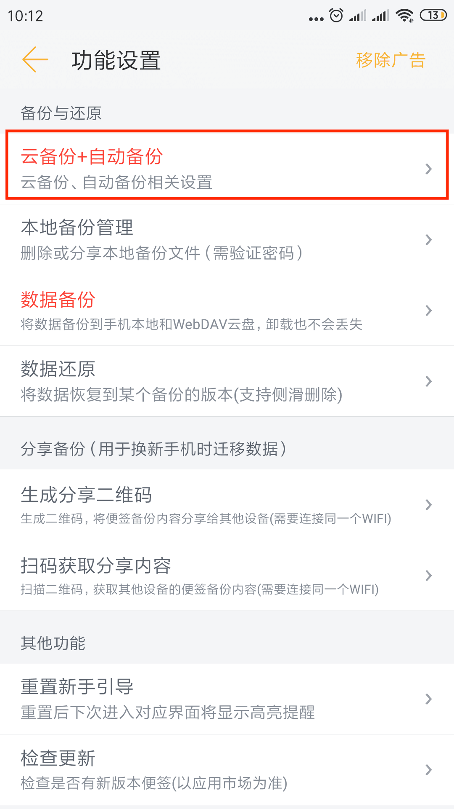
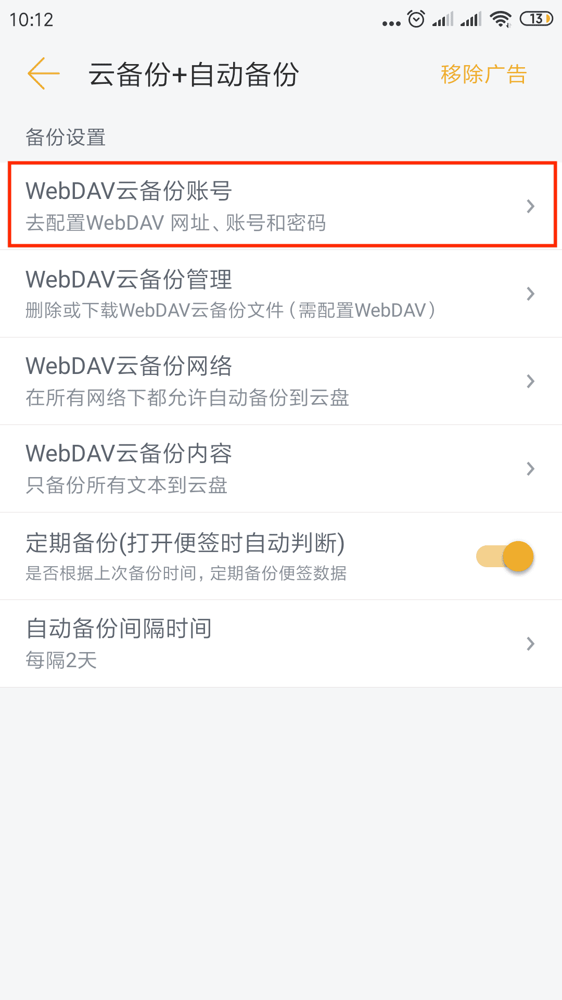

WebDAV云备份
1. 什么事WebDAV？
WebDAV （Web-based Distributed Authoring and Versioning） 一种基于 HTTP 1.1协议的通信协议。
国内支持此协议的云盘只有【坚果云】。
2. 坚果云去哪下载？
去应用市场搜索“坚果云”，或者用浏览器打开坚果云的官网：
https://www.jianguoyun.com/s/downloads
3. 为什么要云备份？
- 防止手机丢失时，找不回数据；
- 防止手机恢复出厂设置时，找不回数据；
- 防止手机坏了时，找不回数据；
4. 如何开启云备份？
- 准备工作
- 下载并安装坚果云手机客户端（应用市场搜索“坚果云”）
- 注册并登陆坚果云
- 打开坚果云的【设置】
- 进入【第三方应用管理】
- 点击【添加应用密码】，随便输个名字
- 然后，将【服务器地址】【账号】【应用密码】分别复制到下面提到的便签对应位置

- 便签配置备份账号
- 打开【便签夹】界面
- 点击右下方的【设置】图标，进入设置界面
- 滑到最下方，找到【云备份+自动备份】，点进去
- 点击【WebDAV云备份账号】
- 将【坚果云】客户端的【第三方应用管理】中的【服务器地址】【账号】【应用密码】复制到便签里来
- 最后，点击【WebDav 连通性测试】，如果提示“连接成功”，则表示配置成功，下次手动或自动备份时，会同步一份备份文件到坚果云盘的
ZzNote目录

